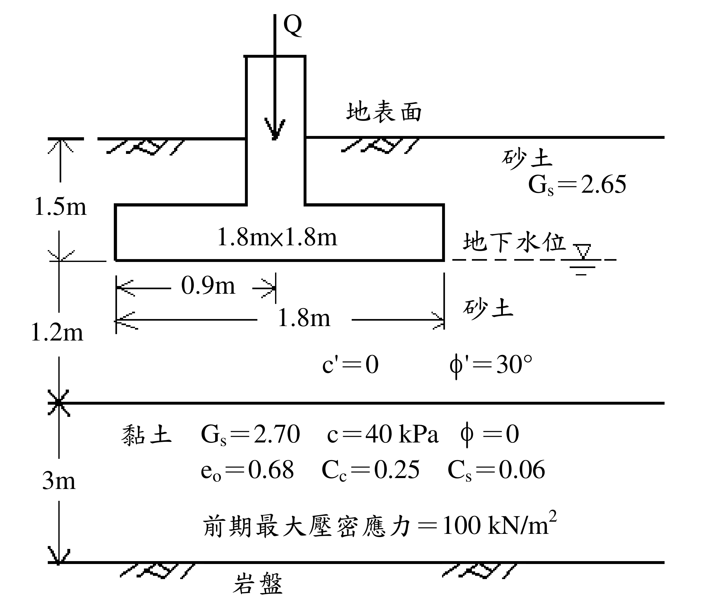
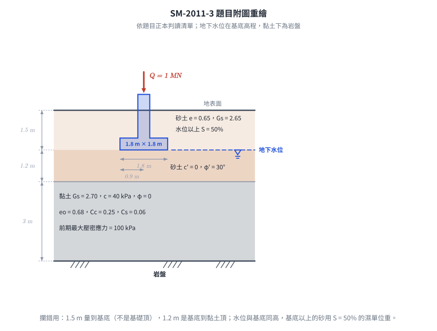
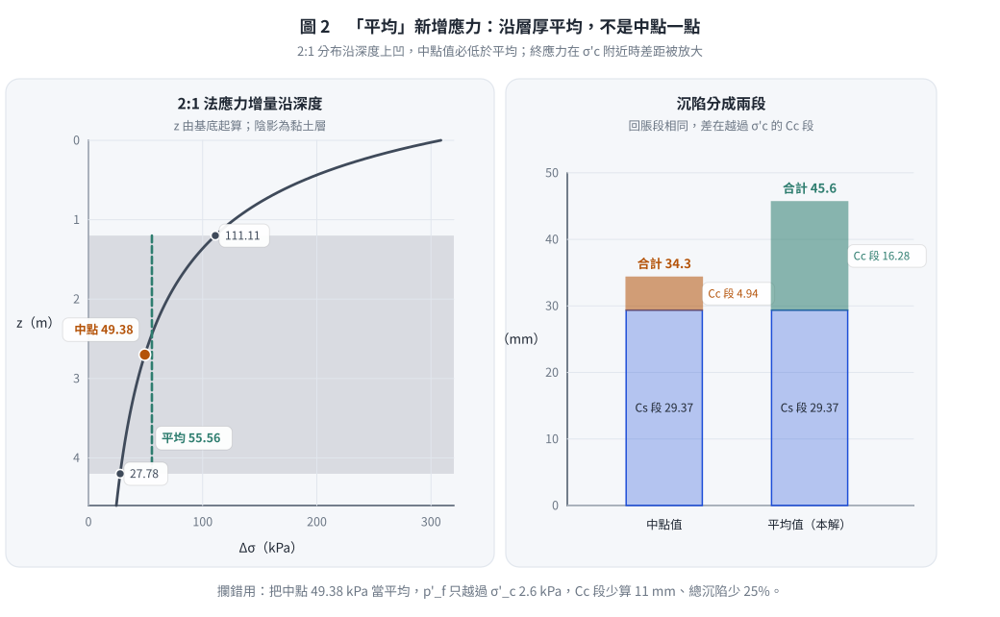

📄 題目正本：考卷原文・附圖・判讀清單（已確認）
SM-2011-3 題目正本
本檔只記錄考卷上寫了什麼、圖上畫了什麼，不含任何解法。解析見同資料夾
SM-2011-3.md。
判讀清單已確認（凍結）；本檔原則上不再修改（改動須回考卷原圖並記 log）。
| 項目 | 內容 |
|---|---|
| 考卷 | raw/exams/SM-2011_土壤力學與基礎設計.pdf 第 2 頁（背面），第三題 |
| 考年 | 民國 100 年（2011） |
| 配分 | 25 分 |
| 附圖 | SM-2011-3-fig-2.png（基礎與地層剖面；2026-11-15 由考卷重新擷取 500 dpi）；既有 SM-2011-3-fig-1.png 為同一圖，柱頂 Q 箭頭旁有滑鼠游標，保留不刪 |
| 判讀狀態 | 已確認（2026-11-15 關卡一：使用者授權依建議判讀確認；轉錄 2026-11-15；PyMuPDF 110 dpi 全頁目視，附圖 400 dpi 局部放大（內嵌點陣影像）；盲讀後才比對既有解析） |
1. 考卷原文（逐字）
三、如下圖所示之 1.8m×1.8m 正方基礎承受 Q 為 1 MN 之鉛垂向之正方柱載重，假設砂土層之孔隙比 e 為 0.65，比重 $G_s$ 為 2.65，地下水位以上砂土之飽和度為 50%；黏土層之比重 $G_s$ 為 2.70，壓縮性指數 $C_c$ 為 0.25，回脹性指數 $C_s$ 為 0.06，最初孔隙比 $e_o$ 為 0.68。其他參數如圖中所標示。㈠假設壓力以 2：1（V：H）分布方式向下傳遞，試計算基礎中心下方黏土層之平均新增鉛垂向應力為若干（kPa）？㈡試計算黏土層之壓密沉陷量為若干（mm）？（25 分）
2. 考卷給的公式、附表與參數
- 基礎：1.8 m × 1.8 m 正方基礎；柱載重 $Q$ = 1 MN（鉛垂）。
- 砂土：$e$ = 0.65、$G_s$ = 2.65、水位以上飽和度 50%；圖上 $c'$ = 0、$\phi'$ = 30°。
- 黏土：$G_s$ = 2.70、$C_c$ = 0.25、$C_s$ = 0.06、$e_o$ = 0.68；圖上 $c$ = 40 kPa、$\phi$ = 0、前期最大壓密應力 = 100 kN/m²。
- 題目指定：2：1（V：H）應力分布。
- 沒有給：$\gamma_w$、基礎混凝土與基礎上回填土自重、$Q$ 是否含基礎自重。
- 卷首注意事項：㈠可以使用電子計算器。㈡不必抄題，作答時請將試題題號及答案依照順序寫在試卷上，於本試題上作答者，不予計分。㈢本試題之相關符號、公式、物理常數及設計參數未提及時，請依規範自行合理推斷或假設。
3. 附圖

圖面文字照錄：Q、地表面、砂土 Gs＝2.65、1.5m、1.8m×1.8m、地下水位、0.9m、1.8m、砂土、1.2m、c'＝0 φ'＝30°、黏土 Gs＝2.70 c＝40 kPa φ＝0、eo＝0.68 Cc＝0.25 Cs＝0.06、3m、前期最大壓密應力＝100 kN/m²、岩盤。
4. 判讀清單
| # | 項目 | 判讀 | 圖上／題文依據 | 把握 |
|---|---|---|---|---|
| 1 | 基礎埋深 | 1.5 m，由地表量到基底（尺寸線上端對齊地表線，下端對齊基底延長線） | 附圖 400 dpi，左側尺寸線 | 確定 |
| 2 | 地下水位 | 在基底高程（地表下 1.5 m）；虛線與基底底線同高 | 附圖虛線與基底對齊 | 確定 |
| 3 | 基底下砂土厚 | 1.2 m（基底到黏土頂；尺寸線上端在基底延長線、下端在黏土頂線的 × 記號） | 附圖左側尺寸線 | 確定 |
| 4 | 黏土層厚 | 3 m，黏土頂到岩盤頂 | 附圖左側尺寸線 | 確定 |
| 5 | 黏土下方 | 岩盤（附圖畫地層符號） | 附圖 | 確定 |
| 6 | 基礎尺寸 | 1.8 m × 1.8 m；圖上 0.9 m 為基底左緣到柱中心線（半寬） | 附圖尺寸線 | 確定 |
| 7 | 砂土單位重 | 未直接給，須由 $e$、$G_s$、$S$ 換算：水位以上 $S$ = 50%，水位以下飽和 | 題文 | 確定 |
| 8 | 黏土單位重 | 未直接給，由 $G_s$ = 2.70、$e_o$ = 0.68（飽和）換算 | 題文 | 確定（解讀） |
| 9 | 黏土強度參數 | 圖上 $c$ = 40 kPa、$\phi$ = 0、砂土 $c'$、$\phi'$ 與本題兩小題無直接關係 | 附圖 | 確定 |
| 10 | 荷重 | $Q$ = 1 MN 為柱載重；基礎與回填土自重未給 | 題文 | 確定（解讀） |
| 11 | 所求㈠ | 基礎中心下方黏土層的平均新增鉛垂應力（2：1 法） | 題文 | 確定 |
| 12 | 所求㈡ | 黏土層壓密沉陷量（mm） | 題文 | 確定 |
| 13 | 考卷沒有給 | $\gamma_w$、基礎自重、回填土重 | 全題 | 確定 |
轉錄：2026-11-15（SM-U1-3 題目正本推廣・批 1）
確認：2026-11-15 使用者授權依建議判讀確認（SM-U1-3 題目正本推廣・批 1，關卡一；使用者指示「要我確認的請依你建議」）
考題編號：SM-2011-3
主分類： SM-U1-3 土壤夯實及壓密
副分類： SM-U1-4 土體內應力、SM-U2-1 淺基礎之支承力與沉陷量
分析法： 有效應力法
標籤： 壓密沉陷 2:1應力分布 應力增量 過壓密 OCR e-log p'曲線 回脹指數Cs 飽和度
1. 題目（考卷原文見題目正本）
考卷原文、公式／附表、附圖與判讀清單（已確認）見
SM-2011-3-problem.md。本節只列解題時最容易讀錯的地方與本解使用的記號；題意以題目正本為準。

重繪自考卷附圖，依題目正本判讀清單 #1–#6；攔下的判讀錯誤：1.5 m 量到基底而非基礎頂、地下水位與基底同高。
常見誤讀
| 項目 | 正確判讀 | 常見誤讀 |
|---|---|---|
| 埋深與水位 | 1.5 m 由地表量到基底，地下水位在基底高程（題目正本 #1、#2） | 水位畫在地表或基礎頂 |
| 黏土頂深度 | 基底下砂土 1.2 m → 黏土頂在地表下 2.7 m、厚 3 m（#3、#4） | 把 1.2 m 當成由地表起算 |
| 單位重 | 砂土、黏土都沒給單位重，須由 $e$、$G_s$、$S$ 換算（#7、#8） | 直接假設 $\gamma=18$ |
| 所求「平均」應力 | ㈠問黏土層的平均新增應力（#11）：2:1 公式沿層厚取平均，$\Delta\sigma_{av}=55.56$ kPa | 只取黏土中點一點的 49.38 kPa 當平均（本解 2026-11-15 前即如此，沉陷因而少算 25%） |
本解記號： $\Delta\sigma_{av}$ 黏土層平均應力增量；$\sigma'_0$ 黏土中點初始有效應力；$\sigma'_c$ 前期最大壓密應力；$S_c$ 壓密沉陷量。
2. 考題核心精神與出題者意圖 (Core Concepts & Examiner's Intent)
本題測驗考生對於淺基礎沉陷量計算之完整流程掌握度，主要核心意圖包含：
- 部分飽和土壤之單位重計算：水位以上的砂土層給定 $S=50\%$，需正確代入三相圖公式求取濕單位重 $\gamma_t$。
- 2:1 應力分布法之應用：測驗是否能正確計算深度 $z$ 處之新增應力，並依題意求整個黏土層的「平均」新增應力——沿層厚平均，不是中點一點的值。
- 過壓密狀態 (OCR) 的判別與沉陷量計算：給定前期最大壓密應力 $p_c'=100 \text{ kPa}$，考生必須先計算初始有效覆土應力 $p_0'$ 並與 $p_c'$ 比較。本題設計 $p_0' + \Delta\sigma$ 剛好跨越 $p_c'$，因此必須分段使用回脹指數 $C_s$ 與壓縮指數 $C_c$ 計算沉陷量。
3. 解題戰略地圖與陷阱分析 (Strategic Roadmap & Trap Analysis)
解題步驟：
- 求取各層單位重：分別計算水位上砂土 ($\gamma_t$)、水位下砂土 ($\gamma_{sat}$、$\gamma'$)、黏土 ($\gamma_{sat}$、$\gamma'$) 之單位重。
- 計算初始有效應力 $p_0'$：計算基礎中心下方、黏土層中央處之初始有效覆土應力。
- 計算平均新增應力 $\Delta\sigma_{avg}$：採用 2:1 應力分布法，沿黏土層厚度（基底下 $z_t$ = 1.2 m 到 $z_b$ = 4.2 m）積分取平均，再以辛普森法則交叉驗算。
- 判斷應力歷史並計算沉陷量 $S_c$：比較 $p_0'$、$p_c'$ 與 $p_0' + \Delta\sigma_{avg}$，代入過壓密雙段沉陷公式求解。
陷阱分析：
- 陷阱一：忽略水位以上的飽和度。若直接將水位上砂土視為乾燥 ($S=0$) 或忽略不計，將導致 $p_0'$ 計算錯誤。
- 陷阱二：計算 $\Delta\sigma$ 的深度 $z$ 定義。2:1 應力分布法的深度 $z$ 必須由「基礎底面」起算，而非地表面。至黏土層中央之深度 $z = 1.2 + 3.0/2 = 2.7 \text{ m}$。
- 陷阱四：把中點值當平均。題目明問「平均」新增應力；黏土頂、中、底的增量為 111.11、49.38、27.78 kPa，分布上凹，中點值比層厚平均低約 11%。
- 陷阱三：沉陷量公式錯用。若未檢查 $p_0' + \Delta\sigma_{avg}$ 是否大於 $p_c'$，可能只套用 $C_s$ 計算，忽略了跨越 $p_c'$ 後進入正常壓密線的 $C_c$ 貢獻段。
3.5 變數層次分析 (Variable Hierarchy Analysis)
最終目標
求出黏土層之平均新增應力 $\Delta\sigma_{avg}$ 與最終壓密沉陷量 $S_c$。
本題關鍵公式（依計算順序）
-
土壤單位重推導：
$$ \gamma = \frac{G_s + S \cdot e}{1+e}\gamma_w $$ -
初始有效應力（黏土層中央）：
$$ p_0' = \Sigma (\gamma_i \cdot H_i) - u $$ -
2:1 應力分布（沿黏土層厚取平均，$B=L$）：
$$ \Delta\sigma_{avg} = \frac{1}{H}\int_{z_t}^{z_b}\frac{Q}{(B+z)^2}\,dz = \frac{Q}{H}\left(\frac{1}{B+z_t}-\frac{1}{B+z_b}\right) $$ -
過壓密土壤沉陷量（當 $\boxed{p_0'} < p_c' < \boxed{p_0'} + \boxed{\Delta\sigma_{avg}}$）：
$$ S_c = \frac{C_s H}{1+e_0}\log\left(\frac{p_c'}{\boxed{p_0'}}\right) + \frac{C_c H}{1+e_0}\log\left(\frac{\boxed{p_0'} + \boxed{\Delta\sigma_{avg}}}{p_c'}\right) $$
L1：題目直接給定
| 符號 | 數值 | 說明 |
|---|---|---|
| $B \times L$ | $1.8 \text{ m} \times 1.8 \text{ m}$ | 基礎尺寸 |
| $Q$ | $1000 \text{ kN}$ | 柱載重 ($1 \text{ MN}$) |
| $e_{sand}$ | $0.65$ | 砂土孔隙比 |
| $G_{s,sand}$ | $2.65$ | 砂土比重 |
| $S_{top}$ | $50\%$ | 水位以上砂土飽和度 |
| $e_0$ | $0.68$ | 黏土初始孔隙比 |
| $G_{s,clay}$ | $2.70$ | 黏土比重 |
| $C_c$ | $0.25$ | 黏土壓縮指數 |
| $C_s$ | $0.06$ | 黏土回脹指數 |
| $p_c'$ | $100 \text{ kPa}$ | 黏土前期最大壓密應力 |
| $H_{clay}$ | $3.0 \text{ m}$ | 黏土層厚度 |
L2：需知識點推導
土壤單位重
| 符號 | 公式／來源 | 卡關? |
|---|---|---|
| $\gamma_{t,sand}$ | $\frac{G_s + S \cdot e}{1+e}\gamma_w$ | |
| $\gamma_{sat,sand}$ | $\frac{G_s + e}{1+e}\gamma_w$ | |
| $\gamma_{sat,clay}$ | $\frac{G_s + e_0}{1+e_0}\gamma_w$ | |
應力與沉陷計算
| 符號 | 公式／來源 | 卡關? |
|---|---|---|
| $p_0'$ | $\gamma_{t} H_1 + \gamma_{sand}' H_2 + \gamma_{clay}' (H_3/2)$ | |
| $\Delta\sigma_{avg}$ | $\frac{Q}{H}\left(\frac{1}{B+z_t}-\frac{1}{B+z_b}\right)$（2:1 積分平均） | |
| $S_c$ | 雙段沉陷量公式加總 | |
L3：深層知識（不懂就卡住）
| 知識點 | 說明 | 卡關? |
|---|---|---|
| 平均應力選取法 | 題目問「平均」時要沿層厚平均（積分或辛普森法則）；中點值只是近似。本題 $p_0'+\Delta\sigma$ 恰在 $p_c'$ 附近，平均值差 11% 就讓沉陷差約 33%。 | |
| OCR 沉陷段落判定 | 需清晰比較 $p_0'$、$p_c'$、$p_f'$ 才能決定公式，勿盲目套用單一公式。 |
4. 步驟化詳細計算過程 (Step-by-Step Detailed Calculation)
Step 1. 土壤各層單位重計算
假設水的單位重 $\gamma_w = 9.81 \text{ kN/m}^3$。
-
地下水位以上砂土 ($1.5 \text{ m}$)：
$$ \gamma_{t} = \frac{G_s + S \cdot e}{1+e}\gamma_w = \frac{2.65 + 0.5 \times 0.65}{1+0.65} \times 9.81 = \frac{2.975}{1.65} \times 9.81 = 17.69 \text{ kN/m}^3 $$ -
地下水位以下砂土 ($1.2 \text{ m}$)：
$$ \gamma_{sat,sand} = \frac{G_s + e}{1+e}\gamma_w = \frac{2.65 + 1.0 \times 0.65}{1+0.65} \times 9.81 = \frac{3.30}{1.65} \times 9.81 = 19.62 \text{ kN/m}^3 $$
有效單位重：$\gamma_{sand}' = 19.62 - 9.81 = 9.81 \text{ kN/m}^3$ -
黏土層 ($3.0 \text{ m}$)：
$$ \gamma_{sat,clay} = \frac{G_s + e_0}{1+e_0}\gamma_w = \frac{2.70 + 0.68}{1+0.68} \times 9.81 = \frac{3.38}{1.68} \times 9.81 = 19.74 \text{ kN/m}^3 $$
有效單位重：$\gamma_{clay}' = 19.74 - 9.81 = 9.93 \text{ kN/m}^3$
Step 2. 黏土層中央之初始有效應力 ($p_0'$)
取黏土層中央深度，即基礎底面下方 $1.2 \text{ m} + \frac{3.0}{2} \text{ m} = 2.7 \text{ m}$，距離地表為 $1.5 + 2.7 = 4.2 \text{ m}$。
$$ p_0' = \Sigma (\gamma \cdot H) - u $$
$$ p_0' = 17.69 \times 1.5 + 9.81 \times 1.2 + 9.93 \times 1.5 $$
$$ p_0' = 26.54 + 11.77 + 14.90 = \mathbf{53.21 \text{ kPa}} $$
(註：若精確計算，$26.535 + 11.772 + 14.895 = 53.20 \text{ kPa}$)
Step 3. 基礎中心下方黏土層之平均新增鉛垂向應力 ($\Delta\sigma_{avg}$)
💡 策略註解：題目問的是黏土層的「平均」新增應力，所以把 2:1 公式沿黏土層厚度取平均，而不是只取中點一點。
載重 $Q = 1 \text{ MN} = 1000 \text{ kN}$，基礎尺寸 $B \times L = 1.8 \text{ m} \times 1.8 \text{ m}$。深度 $z$ 由基礎底面起算：黏土頂 $z_t = 1.2 \text{ m}$、黏土底 $z_b = 1.2 + 3.0 = 4.2 \text{ m}$。
2:1 法任一深度的新增應力：
$$ \Delta\sigma_z = \frac{Q}{(B+z)(L+z)} $$
黏土頂、中、底分別為 $\Delta\sigma_t = \frac{1000}{3.0^2} = 111.11 \text{ kPa}$、$\Delta\sigma_m = \frac{1000}{4.5^2} = 49.38 \text{ kPa}$、$\Delta\sigma_b = \frac{1000}{6.0^2} = 27.78 \text{ kPa}$。
沿層厚積分取平均（$B = L$）：
$$ \Delta\sigma_{avg} = \frac{1}{H}\int_{z_t}^{z_b}\frac{Q}{(B+z)^2}\,dz = \frac{Q}{H}\left(\frac{1}{B+z_t}-\frac{1}{B+z_b}\right) = \frac{1000}{3.0}\left(\frac{1}{3.0}-\frac{1}{6.0}\right) = \mathbf{55.56 \text{ kPa}} $$
交叉驗算（辛普森法則）：$\Delta\sigma_{avg} \approx \frac{1}{6}(\Delta\sigma_t + 4\Delta\sigma_m + \Delta\sigma_b) = \frac{1}{6}(111.11 + 4 \times 49.38 + 27.78) = 56.07 \text{ kPa}$，與積分值差 0.9%。
(一) 基礎中心下方黏土層之平均新增鉛垂向應力解答：
$$ \boxed{\Delta\sigma_{avg} = 55.56 \text{ kPa}} $$

圖 2 「平均」新增應力要沿層厚平均。2:1 分布上凹，中點值必低於平均；本題終應力在 $p_c'$ 附近，攔下「把中點值當平均、沉陷少算 25%」的錯誤。
Step 4. 黏土層之壓密沉陷量計算 ($S_c$)
判斷應力歷史：
- 初始有效應力：$p_0' = 53.20 \text{ kPa}$
- 前期最大壓密應力：$p_c' = 100 \text{ kPa}$
由於 $p_0' < p_c'$，此黏土層處於過壓密狀態 (Overconsolidated)。
計算最終有效應力 $p_f'$：
$$ p_f' = p_0' + \Delta\sigma_{avg} = 53.20 + 55.56 = \mathbf{108.76 \text{ kPa}} $$
因為 $p_0' < p_c' < p_f'$，沉陷量將分為兩段（回脹段 + 正常壓密段）：
$$ S_c = S_{c1} + S_{c2} = \frac{C_s H}{1+e_0}\log\left(\frac{p_c'}{p_0'}\right) + \frac{C_c H}{1+e_0}\log\left(\frac{p_f'}{p_c'}\right) $$
-
第一段 (回脹段, $p_0' \to p_c'$)：
$$ S_{c1} = \frac{0.06 \times 3000 \text{ mm}}{1 + 0.68} \log\left(\frac{100}{53.20}\right) = 107.14 \times \log(1.8797) = 107.14 \times 0.2741 \approx 29.37 \text{ mm} $$ -
第二段 (正常壓密段, $p_c' \to p_f'$)：
$$ S_{c2} = \frac{0.25 \times 3000 \text{ mm}}{1 + 0.68} \log\left(\frac{108.76}{100}\right) = 446.43 \times \log(1.0876) = 446.43 \times 0.03647 \approx 16.28 \text{ mm} $$
總壓密沉陷量：
$$ S_c = 29.37 + 16.28 = \mathbf{45.65 \text{ mm}} $$
(二) 黏土層之壓密沉陷量解答：
$$ \boxed{S_c \approx 45.6 \text{ mm}} $$
交叉驗算：把黏土層切成薄層，各層用該深度的 $p_0'(z)$ 與 $\Delta\sigma_z$ 分別判斷 OC／NC 段後積分，得 $S_c = 46.5 \text{ mm}$，與上式差 2%。
5. 關鍵爭議點與進階探討 (Critical Issues & Advanced Discussion)
- 2:1 法「平均應力」的三種算法與差異：
- 積分平均（本解主線）：$\Delta\sigma_{avg} = \frac{Q}{H}\left(\frac{1}{B+z_t}-\frac{1}{B+z_b}\right) = 55.56 \text{ kPa}$，是 2:1 分布沿層厚的精確平均，$S_c = 45.6 \text{ mm}$。
- 辛普森法則：$\frac{1}{6}(\Delta\sigma_t + 4\Delta\sigma_m + \Delta\sigma_b) = 56.07 \text{ kPa}$，與積分值幾乎相同，$S_c = 46.6 \text{ mm}$；手算時較快。
- 中點值（對照，不是平均）：只取黏土中點 $\Delta\sigma_m = 49.38 \text{ kPa}$，$p_f' = 102.58 \text{ kPa}$ 僅略超過 $p_c'$，$S_c = 34.3 \text{ mm}$。本解 2026-11-15 前以此為答案；題目明問「平均」新增應力，且 2:1 分布上凹，中點值必然低於層厚平均。
-
為什麼差這麼多：$p_0' = 53.2 \text{ kPa}$ 到 $p_c' = 100 \text{ kPa}$ 的回脹段兩法相同（29.37 mm），差別全在越過 $p_c'$ 後的 $C_c$ 段：$\log(108.76/100)$ 與 $\log(102.58/100)$ 相差 3.3 倍。終應力落在 $p_c'$ 附近時，平均應力的取法對答案非常敏感。
-
基礎自重與開挖解壓的考量：
本題敘述「基礎承受 Q 為 1 MN 之鉛垂向之正方柱載重」，並未提供基礎本身的厚度或混凝土單位重，故計算中將 $Q$ 視為淨載重 $\Delta P$。若實務題給定基礎版厚，則須計算淨外加載重 (Net applied load)：$\Delta P = Q + W_{foundation} - W_{soil\_excavated}$。
修正日期：2026-11-15（§1 改為指向題目正本 SM-2011-3-problem.md，重繪附圖 figs/SM-2011-3-fig-1-problem.svg；§4 Step 3 補解題圖解 figs/SM-2011-3-fig-2-avg-stress.svg；非勘誤）
修正日期：2026-11-15（FIX：平均應力改積分平均——㈠ 平均新增應力 49.38 → 55.56 kPa（原為黏土中點值，非平均）、㈡ 沉陷 34.31 → 45.6 mm；§1 常見誤讀、§2、§3、§3.5、§4 Step 3–4、§5 同步。驗證：腳本重算 14 個數值 MISMATCHES: 0，辛普森法則 56.07 kPa 與分層積分 46.5 mm 交叉驗算；依 2026-11-15 獨立盲解比對）